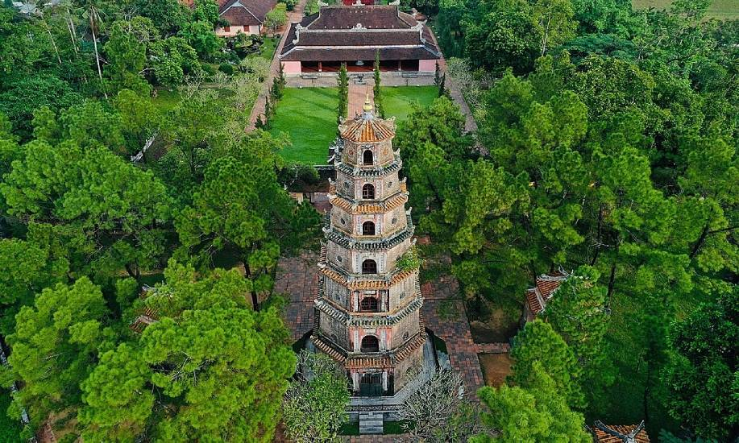
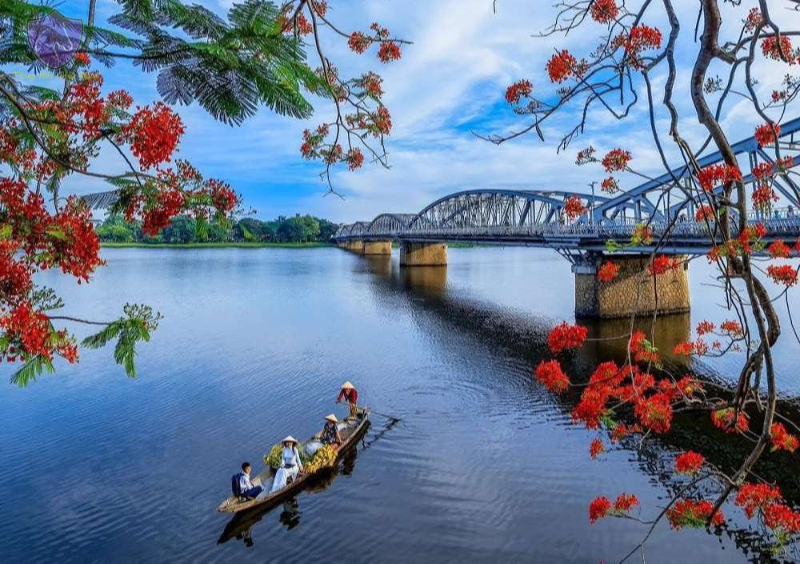

Attractions
Hue’s tourist destinations are a blend of historical grandeur, natural beauty, and cultural richness, offering visitors a journey through ancient imperial sites, scenic riversides, and iconic temples that reflect the city’s timeless charm.
-
Imperial City
The Imperial City of Hue, a UNESCO World Heritage site, is a sprawling complex of palaces, temples, and gates that once served as the royal capital of the Nguyen Dynasty. Its intricate architecture and historical significance offer a glimpse into Vietnam's regal past.
-
Thien Mu Pagoda
The Thien Mu Pagoda, Hue’s tallest and most iconic pagoda, stands gracefully by the Perfume River. This seven-tiered pagoda, dating back to 1601, is not only an architectural marvel but also a symbol of Hue’s spiritual heritage.

-
Perfume River
The Perfume River flows through the heart of Hue, lending the city its serene charm. Surrounded by lush greenery and historic landmarks, this river is a favorite for tranquil boat rides, especially during sunset, providing breathtaking views of Hue’s timeless beauty.
